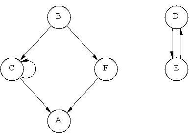

|  |  |

adjacency_matrix<Directed, VertexProperty,
EdgeProperty, GraphProperty,
Allocator>
enum { A, B, C, D, E, F, N };
const char* name = "ABCDEF";
typedef boost::adjacency_matrix<boost::directedS> Graph;
Graph g(N);
add_edge(B, C, g);
add_edge(B, F, g);
add_edge(C, A, g);
add_edge(C, C, g);
add_edge(D, E, g);
add_edge(E, D, g);
add_edge(F, A, g);
std::cout << "vertex set: ";
boost::print_vertices(g, name);
std::cout << std::endl;
std::cout << "edge set: ";
boost::print_edges(g, name);
std::cout << std::endl;
std::cout << "out-edges: " << std::endl;
boost::print_graph(g, name);
std::cout << std::endl;
The output is:
vertex set: A B C D E F edge set: (B,C) (B,F) (C,A) (C,C) (D,E) (E,D) (F,A) out-edges: A --> B --> C F C --> A C D --> E E --> D F --> A図 2のグラフを生成する。
enum { A, B, C, D, E, F, N };
const char* name = "ABCDEF";
typedef boost::adjacency_matrix<boost::undirectedS> UGraph;
UGraph ug(N);
add_edge(B, C, ug);
add_edge(B, F, ug);
add_edge(C, A, ug);
add_edge(D, E, ug);
add_edge(F, A, ug);
std::cout << "vertex set: ";
boost::print_vertices(ug, name);
std::cout << std::endl;
std::cout << "edge set: ";
boost::print_edges(ug, name);
std::cout << std::endl;
std::cout << "incident edges: " << std::endl;
boost::print_graph(ug, name);
std::cout << std::endl;
出力:
vertex set: A B C D E F edge set: (C,A) (C,B) (E,D) (F,A) (F,B) incident edges: A <--> C F B <--> C F C <--> A B D <--> E E <--> D F <--> A B
| Parameter | Description | Default |
|---|---|---|
| Directed | グラフが有効か無向かを選ぶ選択子。オプションは directedS と undirectedS。 | directedS |
| VertexProperty | 内部プロパティ記憶域を指定する。 | no_property |
| EdgeProperty | 内部プロパティ記憶域を指定する。 | no_property |
| GraphProperty | グラフのオブジェクトの内部プロパティ記憶域を指定する。 | no_property |
adjacency_matrix(vertices_size_type n,
const GraphProperty& p = GraphProperty())
頂点数 n、辺数 0 であるグラフのオブジェクトを生成する。
template <typename EdgeIterator>
adjacency_matrix(EdgeIterator first,
EdgeIterator last,
vertices_size_type n,
const GraphProperty& p = GraphProperty())
頂点数 n で、辺が [first, last) の範囲で
与えられたリストで指定された辺をもつグラフのオブジェクトを生成する。
EdgeIterator の値の型は std::pair でなければならず、
それは整数型の組である。
それら整数は頂点に対応し、[0, n) の範囲になければならない。
template <typename EdgeIterator, typename EdgePropertyIterator>
adjacency_matrix(EdgeIterator first, EdgeIterator last,
EdgePropertyIterator ep_iter,
vertices_size_type n,
const GraphProperty& p = GraphProperty())
頂点数 n で、辺が [first, last) の範囲で
与えられたリストで指定された辺をもつグラフのオブジェクトを生成する。
EdgeIterator の値の型は std::pair でなければならず、
それは整数型の組である。
それら整数は頂点に対応し、[0, n) の範囲になければならない。
ep_iter の value_type は EdgeProperty であるべきである。
std::pair<vertex_iterator, vertex_iterator> vertices(const adjacency_matrix& g)グラフ g の頂点集合へのアクセスを提供するイテレータの範囲を返す。 (VertexListGraph からの要求。)
std::pair<edge_iterator, edge_iterator> edges(const adjacency_matrix& g)グラフ g の辺集合へのアクセスを提供するイテレータの範囲を返す。 (EdgeListGraph からの要求。)
std::pair<adjacency_iterator, adjacency_iterator> adjacent_vertices(vertex_descriptor v, const adjacency_matrix& g)グラフ g で頂点 v に隣接する頂点へのアクセスを提供するイテレータの範囲を返す。 (AdjacencyGraph からの要求。)
std::pair<out_edge_iterator, out_edge_iterator> out_edges(vertex_descriptor v, const adjacency_matrix& g)グラフ g で頂点 v の出辺へのアクセスを提供するイテレータの範囲を返す。 グラフが無向であれば、このイテレータの範囲は、 頂点 v に接続する全ての辺へのアクセスを提供する。
vertex_descriptor source(edge_descriptor e, const adjacency_matrix& g)辺 e の始点を返す。
vertex_descriptor target(edge_descriptor e, const adjacency_matrix& g)辺 e の終点を返す。
degree_size_type out_degree(vertex_descriptor u, const adjacency_matrix& g)頂点 u を出る辺の数を返す。
vertices_size_type num_vertices(const adjacency_matrix& g)グラフ g の頂点数を返す。
edges_size_type num_edges(const adjacency_matrix& g)グラフ g の辺数を返す。
vertex_descriptor vertex(vertices_size_type n, const adjacency_matrix& g)グラフの頂点リスト内の n 番目の頂点を返す。
std::pair<edge_descriptor, bool>
edge(vertex_descriptor u, vertex_descriptor v,
const adjacency_matrix& g)
グラフ g で、頂点 u を頂点 v へ接続する頂点を返す。
std::pair<edge_descriptor, bool>
add_edge(vertex_descriptor u, vertex_descriptor v,
adjacency_matrix& g)
辺 (u,v) をグラフへ追加し、その新しい辺への辺記述子を返す。
既に辺があれば二重には追加されず、bool のフラグはfalseとなる。
この処理はグラフのいかなるイテレータ 及び 記述子を無効化することは無い。
std::pair<edge_descriptor, bool>
add_edge(vertex_descriptor u, vertex_descriptor v,
const EdgeProperty& p,
adjacency_matrix& g)
辺 (u,v) をグラフへ追加し、
その新しい辺にその辺の内部プロパティ記憶域の値として、
p を付与する。
更なる詳細は 前にあるメンバ関数 add_edge() を見よ。
void remove_edge(vertex_descriptor u, vertex_descriptor v,
adjacency_matrix& g)
グラフから辺 (u,v) を削除する。void remove_edge(edge_descriptor e, adjacency_matrix& g)グラフから辺 e を削除する。 この操作は remove_edge(source(e, g), target(e, g), g) を呼び出すのと 等価である。
void clear_vertex(vertex_descriptor u, adjacency_matrix& g)グラフから頂点 u に接続する全ての辺を削除する。 その頂点はグラフの頂点集合からは削除されない。
template <typename Property> property_map<adjacency_matrix, Property>::type get(Property, adjacency_matrix& g) template <typename Property> property_map<adjacency_matrix, Property>::const_type get(Property, const adjacency_matrix& g)Property で指定される頂点プロパティへの プロパティマップのオブジェクトを返す。 Property はグラフのテンプレート引数 VertexProperty で指定されるプロパティの1つと適合していなければならない。
template <typename Property, typename X> typename property_traits< typenamae property_map<adjacency_matrix, Property>::const_type >::value_type get(Property, const adjacency_matrix& g, X x)頂点 もしくは 辺 の記述子 x に対するプロパティ値を返す。
template <typename Property, typename X, typename Value> void put(Property, const adjacency_matrix& g, X x, const Value& value)x のプロパティ値を value にセットする。 x は 頂点 もしくは 辺 の記述子である。 Value は typename property_traits<property_map<adjacency_matrix, Property>::type>::value_type に変換可能でなければならない。
template <typename GraphProperty, typename GraphProperty> typename property_value<GraphProperty, GraphProperty>::type& get_property(adjacency_matrix& g, GraphProperty)グラフのオブジェクト g に付与された GraphProperty で指定されたプロパティを返す。 特性クラス property_value は boost/pending/property.hpp で定義される。
template <typename GraphProperty, typename GraphProperty> const typename property_value<GraphProperty, GraphProperty>::type& get_property(const adjacency_matrix& g, GraphProperty)グラフのオブジェクト g に付与された GraphProperty で指定されたプロパティを返す。 特性クラス property_value は boost/pending/property.hpp で定義される。
Japanese Translation Copyright (C) 2003 KANAHORI Toshihiro <kanahori@k.tsukuba-tech.ac.jp>
オリジナルの、及びこの著作権表示が全ての複製の中に現れる限り、この文書の複製、利用、変更、販売そして配布を認める。このドキュメントは「あるがまま」に提供されており、いかなる明示的、暗黙的保証も行わない。また、いかなる目的に対しても、その利用が適していることを関知しない。